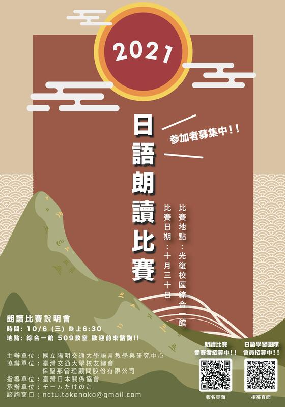
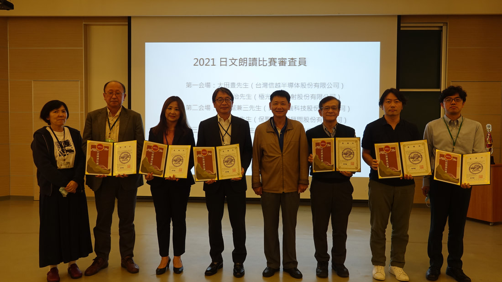
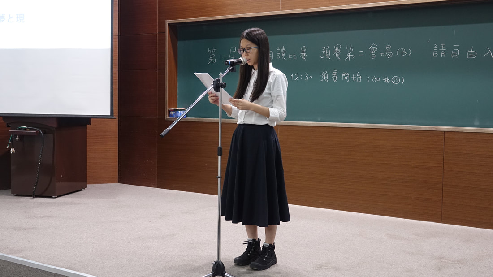
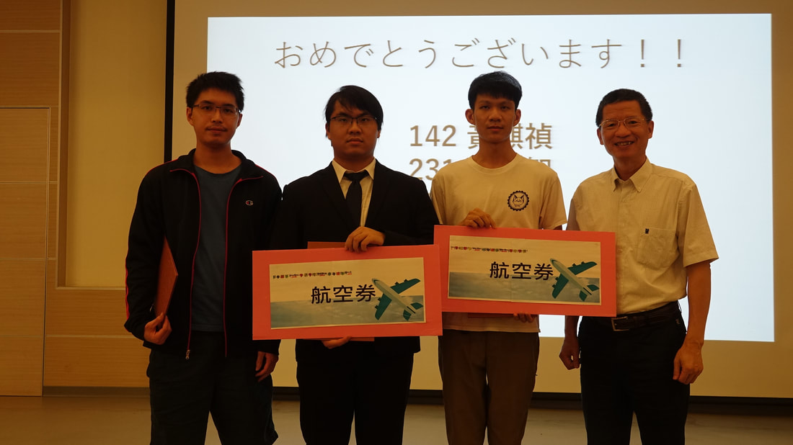
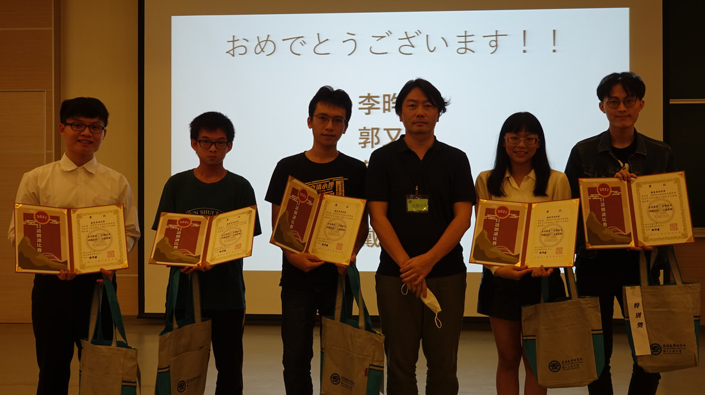
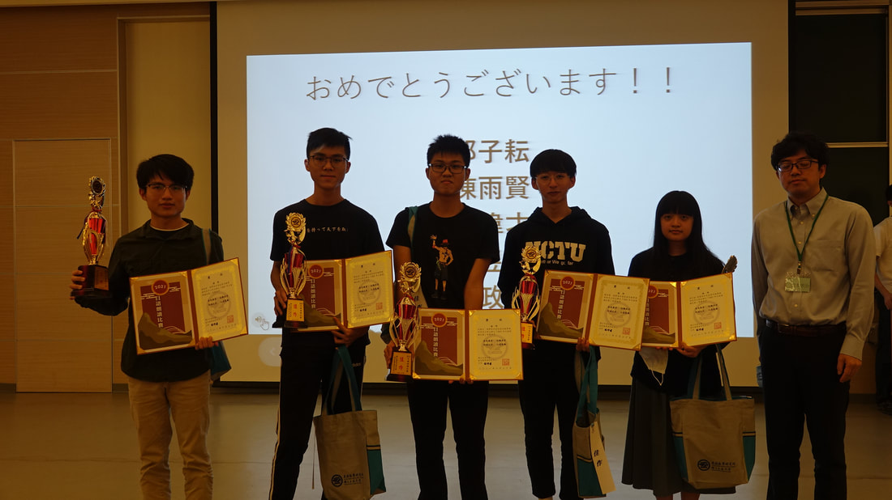
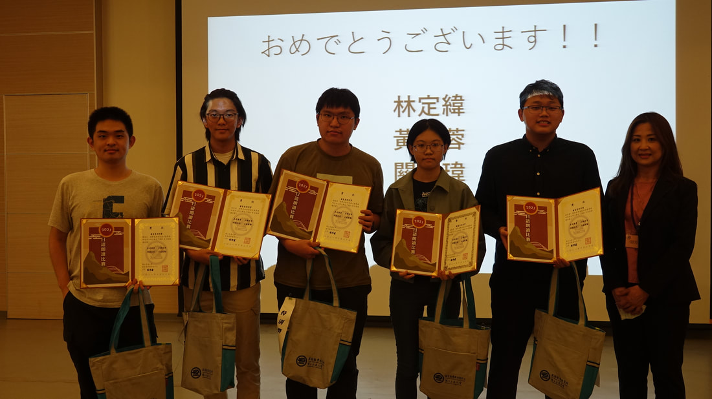

<section class="section" style="border-bottom:none;">
	<div class="container">
		<div class="section-head">
			<span class="eyebrow">Reading Contest 2021</span>
			<h2>国立陽明交通大学日本語朗読コンテスト</h2>
			<p>2021/10/30（土）圓滿結束，謝謝大家的參與和支持，下次再見！</p>
		</div>

		<h3 class="block-title">獲獎名單</h3>
		<table class="data-table">
			<thead><tr><th>獎項</th><th>得獎人</th></tr></thead>
			<tbody>
				<tr><td>優勝</td><td>王芊雅（理學院 一年級）</td></tr>
				<tr><td>準優勝</td><td>陳力熊（電機學院 三年級）</td></tr>
				<tr><td>第三名</td><td>林洸平（工學院 四年級）</td></tr>
				<tr><td>佳作</td><td>邱子耘（電機學院 四年級）<br>陳雨賢（電機學院 三年級）<br>沈偉才（理學院 二年級）<br>陳昱宏（電機學院 二年級）<br>郭政軒（資訊學院 二年級）</td></tr>
				<tr><td>審查員特別賞</td><td>何松翰（生物科技學院 二年級）<br>林定緯（電機學院 三年級）<br>黃姵蓉（管理學院 二年級）<br>關皓瑋（工學院 三年級）<br>余旻達（理學院 二年級）<br>陳怡仁（電機學院 三年級）<br>李昀澤（資訊學院 三年級）<br>郭又嘉（管理學院 二年級）<br>蔡松霖（電機學院 三年級）<br>戴晨洋（理學院 三年級）</td></tr>
				<tr><td>日本知識王冠軍</td><td>黃麒禎（理學院 三年級）<br>王希智（理學院 三年級）<br>蕭翔駿（資訊學院 三年級）</td></tr>
			</tbody>
		</table>

		<div class="page-prose">
			<p>一年一度讓大家發表日語學習成果的舞台——「日語朗讀比賽」開始報名了。朗讀的好處很多，它可以消除與人交談時的緊張感、增長知識、提升記憶力、豐富情感、維持專注力等等。今年選的題目是日本人都耳熟能詳的文學作品。</p>

			<h3>比賽資訊</h3>
			<p>報名資格：今年僅開放陽明交通校內學生報名。<br>
			報名時間：即日起 ~ 報名額滿。<br>
			報到地點：國立交通大學光復校區 綜合一館 B1。</p>
			<p>比賽規則：比賽採預賽與決賽制，初賽成績前 12 名選手進入決賽。初賽題目為四選一，決賽為二選一，請於報名時選擇並登記。</p>
		</div>
		<div class="stat-grid">
			<div><span class="stat-num">30%</span><span class="stat-label">流暢度</span><span class="stat-desc">整體印象、語調</span></div>
			<div><span class="stat-num">30%</span><span class="stat-label">正確性</span><span class="stat-desc">發音、斷句之正確性</span></div>
			<div><span class="stat-num">20%</span><span class="stat-label">表達能力</span><span class="stat-desc">融入情境與否</span></div>
			<div><span class="stat-num">20%</span><span class="stat-label">儀態</span><span class="stat-desc">態度自然與否</span></div>
		</div>
		<div class="page-prose">
			<p>比賽獎項：第一名 1 位、第二名 1 位、第三名 1 位、佳作 5 位、特別賞 10 位。</p>
		</div>

		<h3 class="block-title">比賽時間</h3>
		<table class="data-table">
			<thead><tr><th>時間</th><th>事項</th></tr></thead>
			<tbody>
				<tr><td>11:30</td><td>報到（到各自的會場報到）</td></tr>
				<tr><td>12:10</td><td>比賽說明＆預賽開始</td></tr>
				<tr><td>13:30</td><td>日本知識王</td></tr>
				<tr><td>14:20</td><td>預賽成績發表</td></tr>
				<tr><td>14:40</td><td>決賽開始（疫情關係不開放觀賽）</td></tr>
				<tr><td>16:00</td><td>決賽結束</td></tr>
				<tr><td>16:30</td><td>頒獎～閉幕典禮～團體紀念攝影</td></tr>
				<tr><td>17:00</td><td>結束</td></tr>
			</tbody>
		</table>

		<details class="section-details">
			<summary>分組名單</summary>
			<div class="roster-list">
			<h4>第一会場（AB103）</h4>
			<div class="roster-grid">
				<span>101 黃翊</span>
				<span>102 黃婉婷</span>
				<span>103 范桄耀</span>
				<span>104 張旭霆</span>
				<span>105 賴巧軒</span>
				<span>106 劉孟竹</span>
				<span>107 洪鈺翔</span>
				<span>108 吳健銘</span>
				<span>109 黃姵蓉</span>
				<span>110 陳瑞乾</span>
				<span>111 翁子婷</span>
				<span>112 陳敬諺</span>
				<span>113 林洸平</span>
				<span>114 古智元</span>
				<span>115 邵政允</span>
				<span>116 沈偉才</span>
				<span>117 蘇玠文</span>
				<span>118 蔡鎧宇</span>
				<span>119 翁瑞澤</span>
				<span>120 黃爾泰</span>
				<span>121 張君廷</span>
				<span>122 謝心怡</span>
				<span>123 郝嘉誠</span>
				<span>124 曾仕鈞</span>
				<span>125 邱子耘</span>
				<span>126 郭柏辰</span>
				<span>127 林建宇</span>
				<span>128 王芊雅</span>
				<span>129 林威宇</span>
				<span>130 蔡蕙臨</span>
				<span>131 吳奕儒</span>
				<span>132 黃柏睿</span>
				<span>133 高智全</span>
				<span>134 鄒翔傑</span>
				<span>135 連奕</span>
				<span>136 陳奎翰</span>
				<span>137 蔡宗宏</span>
				<span>138 彭冠文</span>
				<span>139 李國維</span>
				<span>140 許瑋哲</span>
				<span>141 謝文浩</span>
				<span>142 黃麒禎</span>
				<span>143 吳佳諦</span>
			</div>
			<h4>第二会場（ A501 ）</h4>
			<div class="roster-grid">
				<span>201 蕭詠駿</span>
				<span>202 王之昱</span>
				<span>203 陳奕州</span>
				<span>204 陳郁淇</span>
				<span>205 林修安</span>
				<span>206 李昀澤</span>
				<span>207 何松翰</span>
				<span>208 李天寧</span>
				<span>209 楊正旭</span>
				<span>210 吳明倫</span>
				<span>211 陳昱宏</span>
				<span>212 郭又嘉</span>
				<span>213 吳宥毅</span>
				<span>214 陳重諺</span>
				<span>215 邱俊耀</span>
				<span>216 邵楷唐</span>
				<span>217 陳彥潔</span>
				<span>218 戴晨洋</span>
				<span>219 葉欣妤</span>
				<span>220 丁立心</span>
				<span>221 陳柏旭</span>
				<span>223 游馥婷</span>
				<span>224 陶萱軒</span>
				<span>225 陸信丞</span>
				<span>226 陳映彤</span>
				<span>227 郭子維</span>
				<span>228 郭政軒</span>
				<span>229 陳子綺</span>
				<span>230 關皓瑋</span>
				<span>231 王希智</span>
				<span>232 湯希然</span>
				<span>233 吳宗翰</span>
				<span>234 林定緯</span>
				<span>236 朱嘉宇</span>
				<span>237 曹宗叡</span>
				<span>238 管彩芝</span>
				<span>239 蔡松霖</span>
				<span>240 陳孟擎</span>
				<span>241 林冠丞</span>
				<span>242 邱恆毅</span>
				<span>243 黃哲亞</span>
				<span>244 王照翔</span>
			</div>
			<h4>第三会場（A502）</h4>
			<div class="roster-grid">
				<span>301 翁詩玟</span>
				<span>302 陳力熊</span>
				<span>303 林珈伃</span>
				<span>304 趙祥智</span>
				<span>305 蘇士紘</span>
				<span>306 陳怡仁</span>
				<span>307 邱楷翔</span>
				<span>308 鄭名杰</span>
				<span>309 劉祐銓</span>
				<span>310 卓冠廷</span>
				<span>311 戴偉同</span>
				<span>312 許鎮宇</span>
				<span>313 羅家淯</span>
				<span>314 王培丞</span>
				<span>315 張詠晴</span>
				<span>316 林世奇</span>
				<span>317 陳思駿</span>
				<span>318 余世章</span>
				<span>319 劉宸維</span>
				<span>320 邱博謙</span>
				<span>321 黃寀綾</span>
				<span>322 陳弘堯</span>
				<span>323 李嘉泰</span>
				<span>324 張維君</span>
				<span>325 高智全</span>
				<span>326 林思妤</span>
				<span>327 蕭翔駿</span>
				<span>328 余旻達</span>
				<span>329 朱峻正</span>
				<span>330 蕭岑晏</span>
				<span>331 翁逸芯</span>
				<span>332 林揚哲</span>
				<span>333 余唯愷</span>
				<span>334 黃岳崢</span>
				<span>335 詹鎧駿</span>
				<span>336 呂霈欣</span>
				<span>337 郭子維</span>
				<span>338 林哲安</span>
				<span>339 陳雨賢</span>
				<span>340 林方敏</span>
				<span>341 許璨勝</span>
				<span>342 洪婕庭</span>
			</div>
		</div>
		</details>

		<div class="quote-list">
			<blockquote>
				<strong>ごあいさつ</strong><br><br>
				当校では毎年、日ごろの日本語学習の成果を披露する場として、日本語朗読コンテストを開催しております。今年の予選テーマはよく知られた昔話の童謡を4篇、決勝テーマは日本を代表する近代文学者の作品2篇を選びました。<br>
				日本語学習者のみなさんの語り、表現力の豊かさにいつも感服しています。今年も素晴らしいパフォーマンスが見られるのを楽しみにしております。<br>
				本校每年都會舉辦日語朗讀比賽，來呈現日常日語學習的成果。今年將從日本童話中，挑選四篇著名的故事來作為今年朗讀比賽的預賽主題；並選出代表日本現代文學作家的兩部作品作為決賽的主題。歷次日語朗讀者對故事及文章情境的表達，給我留下了深刻的印象。今年也期待看到各位參賽者的出色表現。<br>
				國立陽明交通大學　上條純惠
			</blockquote>
		</div>

		<div class="btn-group" style="justify-content:center;">
			<a class="btn btn-accent" href="assets/docs/reading-contest-2021-preliminary-topic.pdf">予選課題</a>
			<a class="btn btn-accent" href="assets/docs/reading-contest-2021-final-topic.pdf">決勝課題</a>
		</div>
		<div class="page-prose">
			<p style="text-align:center;"><a href="http://www.gavo.t.u-tokyo.ac.jp/ojad/zho/phrasing/index" target="_blank" rel="noopener">韻律朗讀輔導員 鈴木君</a></p>
		</div>

		<div class="gallery">
			<a class="gallery-item" href="assets/img/uploads/2021_orig.jpg"></a>
			<a class="gallery-item" href="assets/img/uploads/dsc05444_orig.jpg"></a>
			<a class="gallery-item" href="assets/img/uploads/dsc03787_1_orig.jpg"></a>
			<a class="gallery-item" href="assets/img/uploads/dsc05460_orig.jpg"></a>
			<a class="gallery-item" href="assets/img/uploads/dsc05469_orig.jpg"></a>
			<a class="gallery-item" href="assets/img/uploads/dsc05480_orig.jpg"></a>
			<a class="gallery-item" href="assets/img/uploads/dsc05476_orig.jpg"></a>
		</div>
	</div>
</section>
